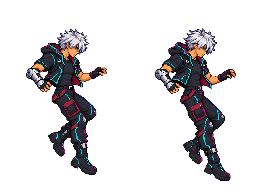

Caída · dos poses
Comienza el descenso y extiende las piernas para mantener una caída controlada.
La segunda pose se conserva hasta el contacto con una superficie.
Cargando…
Vista de poses en el sitio: el juego controlará el desplazamiento vertical. No incluye aterrizaje ni modifica la física. Borrador pendiente de aprobación.
Ver los dos fotogramas
